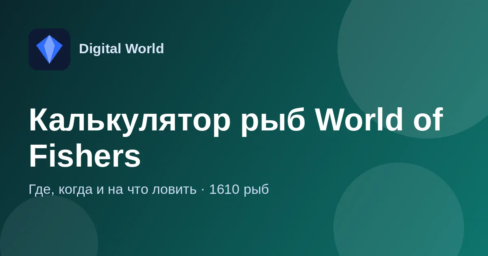

Гид по рыбам World of Fishers: где, когда и на что ловить
Введите название рыбы — и калькулятор подскажет водоём, время суток, наживку и глубину, на которой клюёт именно она.

Зачем нужен калькулятор
В World of Fishers сотни видов рыбы, и у каждой свои условия: водоём, время суток, наживка и глубина. Подбирать всё это вручную — долго, а ошибка в глубине на несколько сантиметров означает, что нужная рыба просто не клюнет.
Калькулятор собирает эти условия в одном месте: вы вводите название рыбы и сразу видите, куда идти и что ставить. В базе — 1610 рыб.
Это справочник, а не бот: он ничего не делает в игре за вас, а просто экономит время на поиске.
Что показывает калькулятор
Водоём и место
Где именно водится нужная рыба.
Время суток
Когда она клюёт лучше всего.
Наживка или приманка
Что поставить: наживки за серебро, за золото и добываемые в игре.
Точная глубина
С учётом правил игры — например, приманки от 10 см, наживки от 40 см.
Без прилова
Варианты, где на этой глубине, в это время и на эту наживку клюёт только нужная рыба. Таких рыб больше 800.
Режим трофеев
«Шанс зачётного экземпляра»: только крупные наживки и приманки — для рекордов.
Как найти условия для рыбы
- Откройте калькулятор — он работает в браузере на компьютере и телефоне.
- Введите название рыбы.
- Выберите обычный режим или режим трофеев.
- Отправляйтесь на указанный водоём и выставьте глубину и наживку из подсказки.
На конкретную рыбу можно сразу дать ссылку другу: добавьте к адресу калькулятора ?fish=Название.
Частые вопросы
Это бесплатно?
Да, калькулятор бесплатный и не требует регистрации.
Что значит «без прилова»?
Это сочетание глубины, времени и наживки, при котором клюёт только выбранная рыба.
Данные актуальны?
Да, данные обновляются после патчей игры.
Это бот?
Нет, это справочник. Боты для других игр — в разделе «Боты для игр» на главной.